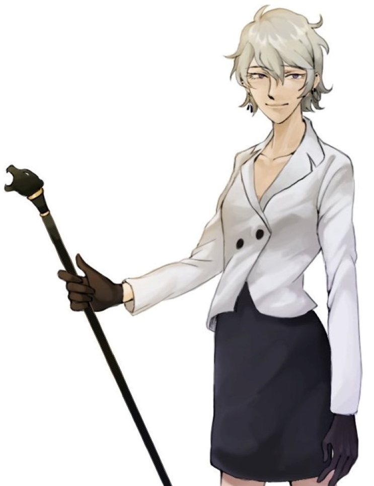

| 야샤 드마트리오브나 볼코프 Ящ Дмитрийовна Волков |
|
|  | |
| 별칭 | 야샤, 흰불나방 |
| 나이 | 47세 |
| 종족 | 나비 |
| Sex / Gender | 여성 / 에이젠더 |
| 직업 | 연구소장 |
| 키 | (굽 포함) 178cm |
| 몸무게 | 61kg |
| 혈액형 | A형 |
| 생일 | 7월 21일 |
FNI
1. 외형
크림색이 도는 은발의 머리카락은 지속적으로 관리를 하는 모양임에도 살짝 뻣뻣하다. 가볍게 내려온 머릿칼은 어깨에 닿지 못한 채 짧게
다듬어져 있다. 진하고 작은 편인 눈동자는 탁한 보라색을 띄었다. 눈꼬리는 위로 살짝 올라가있으며, 아랫눈썹은 길게 내려와 유한 인상을 준다.
항상 가늘게 뜨여있어 웃는 듯한 눈의 바로 아랫부분에는 그의 적지 않은 나이를 드러내듯 작게 주름이 잡혀있다. 쌍커풀은 꽤나 진한 편. 호선을
그리는 입술은 핏기 없으며 가늘다. 피부 또한 전체적으로 핏기 없고 살짝 회색 빛마저 돈다. 오른쪽 귓바퀴에 링 형태의 피어싱 두 개, 귓볼에는
길게 내려오는 귀걸이가 하나. 왼쪽 귓바퀴에는 맨 윗 쪽에 작고 둥근 피어싱 하나, 그리고 귓볼에 링 형태의 피어싱 두 개가 가는 체인으로
연결되어 있다. 피어싱들은 모두 새까맣고 광택이 돌지 않다.
업무 중에는 비싸보이는 재질의 티 위에 유명 브랜드의 하얀 블레이저를 걸친다. 손에는 어두운 고동색의 가죽 장갑을 착용했다.
하의로는 무색 계열의 무릎 바로 위까지 오는 치마나 슬랙스를 입는다. 구두 또한 무광의 검정색 하이힐. 언제나 한 쪽 손에 검은 표범의 머리 장식이
달린 지팡이를 쥐고 있다.
키는 큰 편이지만 전체적으로 살집이 없으며 잔근육 또한 찾아볼 수가 없다. 특히 평소에 노출된 쇄골이나 손목, 발목의 부근만
보아도 비쩍 마른 모습이 보인다.
2. 성격
[ 느긋한 ]
말투에서도, 몸짓 하나하나에서도 여유로움이 풀풀 풍겨나온다. 아무것도 모르는 사람이 얼핏 보면
게으르다고 느낄 정도로 느긋한 행동은 가끔 답답해보이기까지 한다. 긴급한 상황에서 혼자만 태연함을 유지하는 모습은 고고한 늑대의 모습도,
어쩌면 느긋한 방관자의 모습도 비쳐보인다. 오묘한 페이스 덕에, 간혹 주변에 비해 둥둥 떠있다는 느낌을 주기도 한다.
" 그리 호들갑 떨어봐야 무얼 하나? "
[ 얽매이지 않는 ]
세상에서 가장 싫어하는 게 규율과 법이라는 말을 달고 다닐 정도로 규칙이라는 것을 거부한다.
덕분에 매우 유연한 가치관을 가져, 사적인 자리에서는 모든 사람들에게 느슨한 편이기에 인기가 많다. 보편적인 도덕과 법률 또한 곧잘 무시한다.
그런 주제에, 일할 때에는 견고한 규칙으로써 아랫사람들을 부리는 모습을 보여준다.
" 진부한 꿈이라도 읊어보자면, 나는 새가 되고 싶었단다~ "
[ 직설적인 ]
좋고 싫음을 곧바로 입으로 뱉어내는 스타일이다. 돌려 말하는 것을 할 줄 모르는 건지, 일부러 하지 않는
건지... 좋게 보면 시원시원한 성격이지만 나쁘게 보면 타인의 기분을 헤아리지 않는 성격이다.
" 결론은 할 말 없다는 거네? "
3-1. 호불호
티타임을 좋아한다. 그 중에서도 허브차, 더 정확하게는 레몬밤, 히비스커스, 로즈힙 등의 시큼한 향의 차를 가장 좋아한다. 일하는 도중에는
비서에게 타오게 시키지만, 본격적으로 휴식 시간을 갖고 있을 때에는 직접 티포트나 인퓨저를 이용해 내려 마신다. 보통 곁들이는 것은 없이 차
본연의 향을 즐기거나 가끔은 단 과자와 함께 마신다.
나이에 비해 꽤나 건강한 편이지만, 유독 눈이 침침해서 어두운 곳을 좋아하지 않는다. 연구실의 불이 나가면 평소와 다르게 짜증이
가득 난 그를 볼 수 있다.
키위 알레르기가 있어 키위를 매우 싫어한다. 옛날, 알레르기가 있는 줄도 모르던 시절에 먹었다가 말그대로 호흡곤란이 와서
위험했던 기억이 있어, 남들이 멀리서 먹는 것을 보기만 해도 인상을 찌푸린다.
3-3. 직업
재단 산하 연구소의 연구소장. 내외적으로 전반적인 모든 업무를 지휘하고 있다. 연구소에서 주로 진행 중인 것은 인외종과 크리살리스의 포획 및 연구. 비밀리에 나비에 관한 연구도 진행하고 있다. 헤테로세라 재단에게 견제를 많이 당해 사이는 좋지 않은 편, 거의 독자적으로 연구소를 운영하고 있다.
4. 기타
느슨한 말투로, 재단 직원이나 연구원 같은 아랫사람에게는 보통 반말을 쓴다. 처음 만나는 상대에게도 가벼운 존댓말과 반말을 아슬하게 섞어가며 말하는 편. 목소리가 상당히 미성이며, 본인도 자각하고 있는지 노래부르듯 말꼬리를 길게 늘여 말을 끝맺는 것을 좋아한다.
6. 주변 관계
실리 - 관리하던 실험체 중 하나였지만, 지금은 그가 인정한 유일한 가족.
 닥터 - 연구소의 수석 연구원이며 뜻을 함께하는 동료지만 경계하는 중.
닥터 - 연구소의 수석 연구원이며 뜻을 함께하는 동료지만 경계하는 중.
이선우 - 경쟁자
 백 - 재단 관리자
백 - 재단 관리자